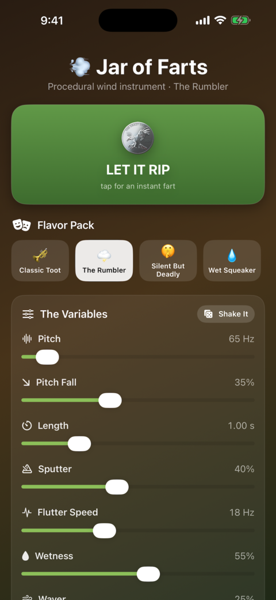
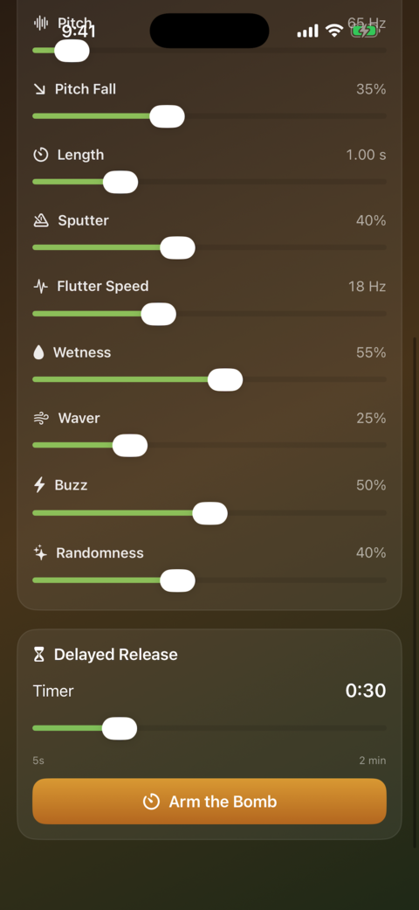
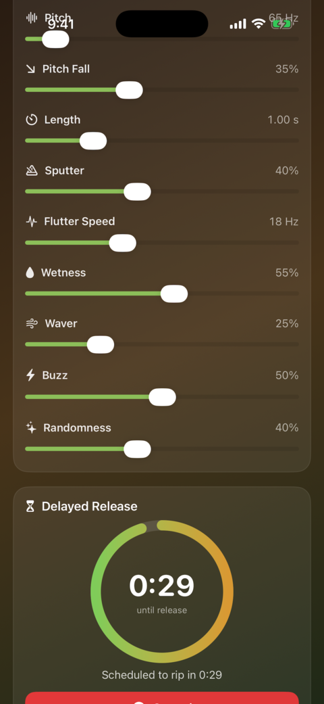

A precision wind instrument for the discerning butt
No recordings, no loops — every toot is generated from scratch by a real physical model of a sphincter: springs, airflow, Bernoulli, the whole deal. No two rips are ever exactly alike.
Nine knobs of pure control
- Pitch — how deep or how squeaky
- Pitch Fall — the mournful descent at the end
- Length — quick pop or long rumble
- Sputter — staccato flutter
- Flutter Speed — the flap rate itself
- Wetness — dry zip to soggy splutter
- Waver — unstable, wavering tone
- Buzz — rasp and grit
- Randomness — how much chaos to add
Flavor Packs & Delayed Release
In a hurry? Grab a preset — The Rumbler, Silent But Deadly, Wet Squeaker, Classic Toot, Brass, The Bubbler, Tiny Poot and more. Or Arm the Bomb, set the timer, and walk away: Jar of Farts counts down and lets it rip right on schedule.



No ads. No accounts. No cloud. Just farts, on demand.